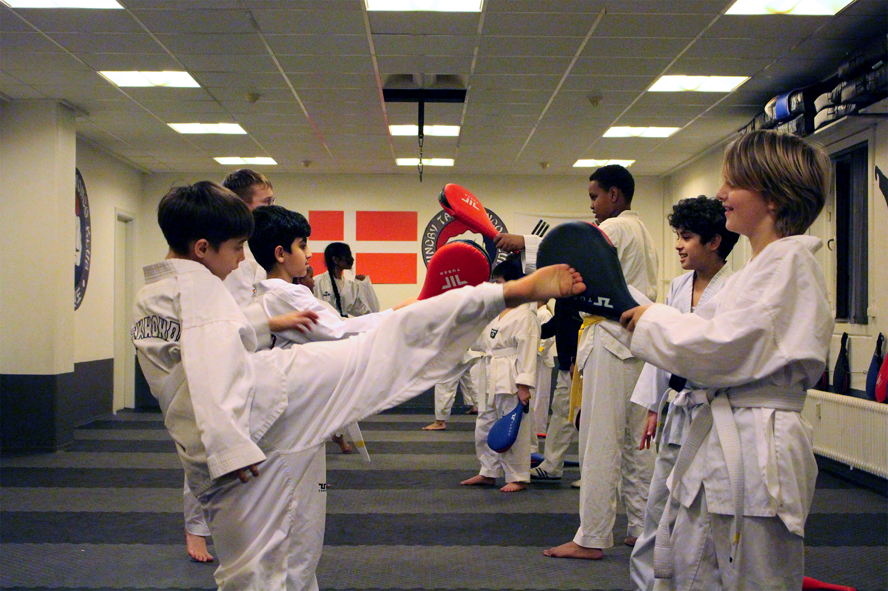
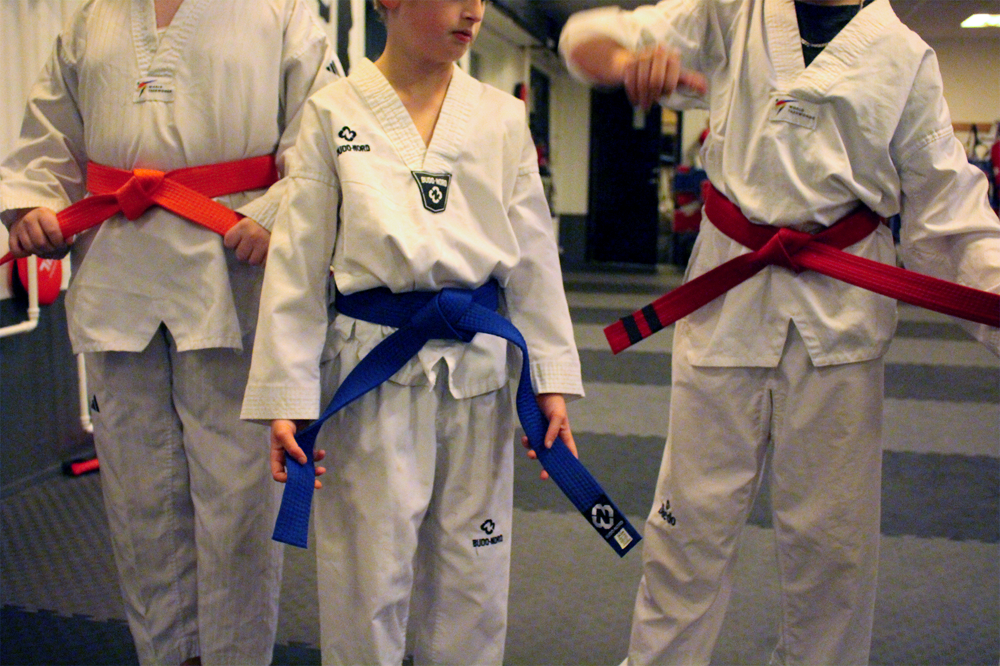
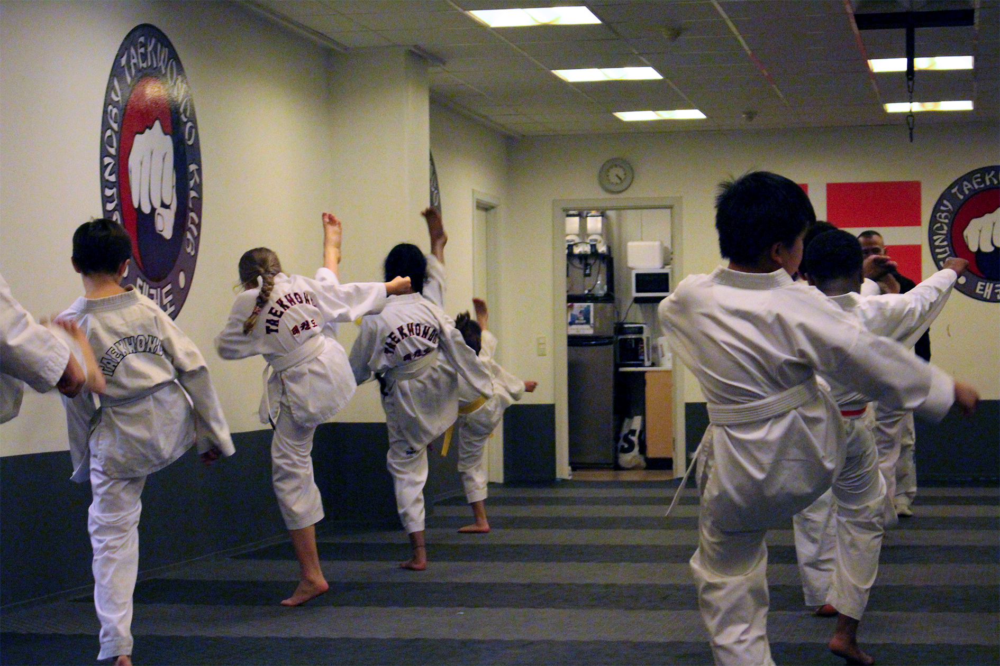
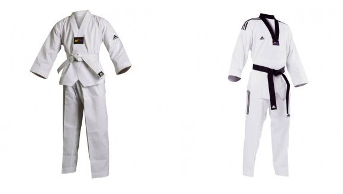
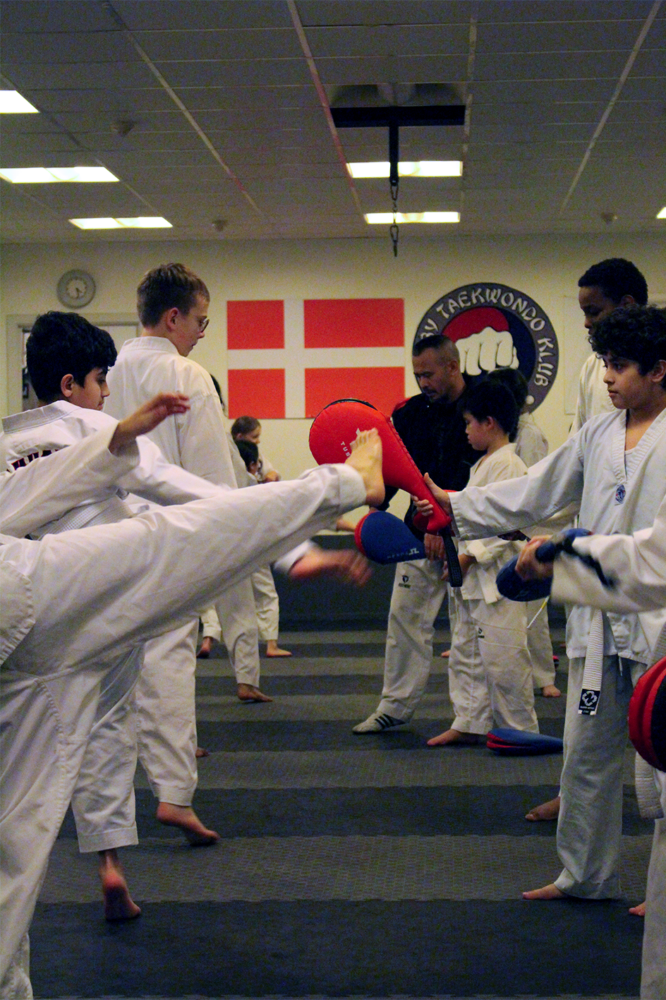
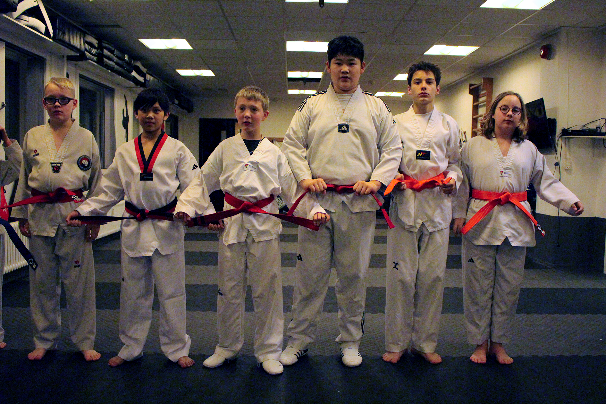
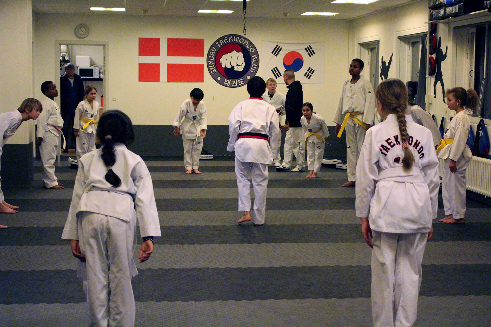
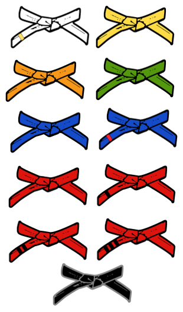
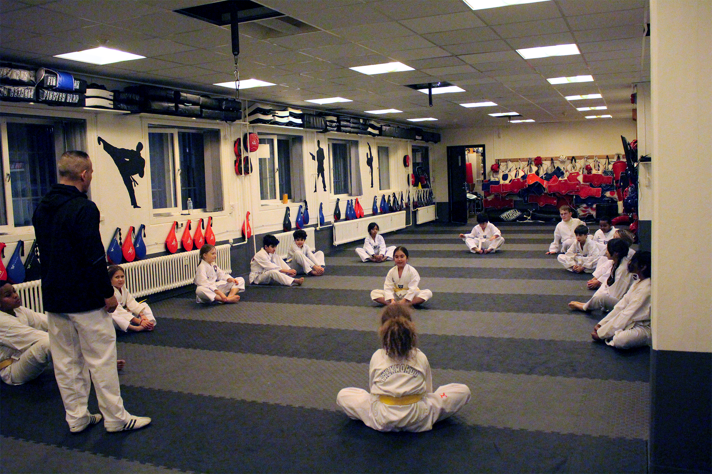
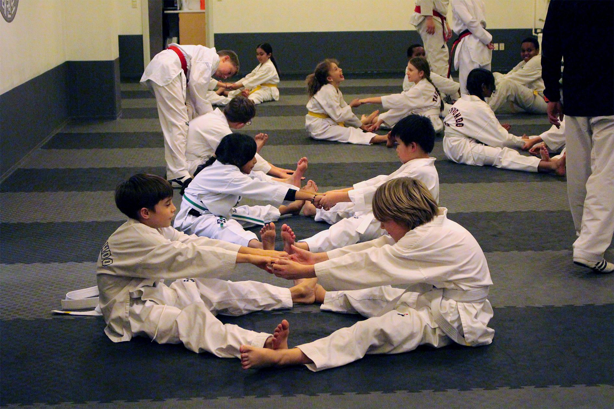

Om Taekwondo
Om sporten
Taekwondo er en koreansk kampkunst, som kan føre sin historie mere end 2000 år tilbage. Dengang brugte man Taekwondo til at forsvare sig mod angreb fra dyr og senere også mod fjendtlige angreb fra mennesker. Taekwondo har efterhånden udviklet sig til en international anerkendt sportsgren, og har således været med i de Olympiske Lege siden 1988.
For mange er Taekwondo meget mere end en actionfyldt kampsport. Det er også:
- en livsstil
- et socialt netværk
- en livsindstilling med værdier som respekt, disciplin, selvtillid mv. som nøgleord
- en personlig sikkerhed
Taekwondo har kort fortalt utrolig mange værdier og anvendelsesmuligheder. Det er op til den enkelte at udnytte hvad man selv synes man vil bruge idrætten/kampkunsten til. Taekwondo indeholder alle aspekter af kamp – og alle afstande, fra gulvkamp og clinch til stående kamp.
Taekwondo er andet end bare træning. Udover de sociale arrangementer i klubben, mødes de forskellige taekwondo klubber ofte til fællestræninger og weekends arrangementer. Endvidere arrangerer Dansk Taekwondo Forbundet bl.a. sommerlejre, hvor det kammeratlige samvær er hovedformålet. Vi mødes også i konkurrencer, hvor der konkurreres efter internationale regler, i både kamp med kontakt og i teknik, hvor der primært konkurreres i figurøvelser, selvforsvar og gennembrydning.
Man behøver ikke være smidig og i god form for at træne Taekwondo, træningen er tilrettelagt således at alle kan være med – træningen er fysisk hård, men der tages højde for at begyndere ikke nødvendigvis er i form. Man bliver aldrig for gammel til at starte til Taekwondo og i Sundby Taekwondo Klub har vi en del som først er begyndt når de er fyldt over 25 år!
Man må selvfølgelig ikke rende rundt og slå på uskyldige mennesker, men i følge Nødværgerettens §13 er det tilladt at forsvare sig mod et påbegyndt eller overhængende angreb, så i de tilfælde må man gerne bruge Taekwondo. Taekwondo er ikke farligt. Den daglige træning giver både større smidighed, styrke og hurtighed. Ved konkurrencer, som er frivillige, forebygges skader igennem regler og udstyr, og i forhold til andre kontaktidrætter (fodbold, håndbold mv.) er der meget få skader i Taekwondo.



Dobok/Træningstøjet
Dobok er navnet på den dragt man bruger i traditionel taekwondo. Dragten er hvid for at signalere renhed og harmoni. En dobok skal altid være ren til træninger – og specielt til gradueringer. Ligesom med sit bælte, så skal den behandles ordentligt. Dobok består af overdel, bukser og bælte. Dobok’en fungerer ikke blot som træningstøj, den symboliserer mange ting bl.a. cirkel, firkant og trekant som er meget vigtige symboler i den østlige filosofi, og det er derfor vigtigt at dobok’en behandles med ære og respekt. Dobok’ens oprindelse kendes ikke præcist, men der er optegnelser der tyder på at den er meget lig den traditionelle beklædning (kaldet hanbok) i det gamle Korea.

Dobok’en repræsenterer som før nævnt følgende symboler:
- Cirkel – ses omkring bæltestedet, symboliserer himlen.
- Firkant – ses i ærmerne og på overdelen af dragten, symboliserer jorden.
- Trekant – ses omkring hoften og i V-udskæringen, symboliserer mennesket.
Cirkel, firkant og trekant danner tilsammen helheden ”han” som også er synonymt med universet. Ifølge østlig filosofi om Um (Yin) og Yang repræsenterer mennesket også et ”lille univers”, hvilket igen er repræsenteret i dobok’en.
- Bukserne – repræsenterer jorden.
- Overdelen – repræsenterer himlen.
- Bæltet – repræsenterer mennesket.
Endelig repræsenterer dobok’ens hvide farve også begyndelsen på Universet, renhed samt grundelementet i alle farver. Alle disse ting kan sammenfattes i nogle simple regler for behandling af sin dobok:
- Dobok’en skal altid være ren og velstrøget.
- Klubmærke – placeret på brystets venstre side.
- Træner/instruktør mærke, som placeres på højre skulder.
Følgende er tilladt, men ikke påkrævet på en dobok – der må ikke bæres andre mærker eller tegn end de her nævnte:
- Taekwondo skrevet med bogstaver og/eller koreanske tegn, dette skal placeres på ryggen og være med sort skrift.
- Navn placeret nederst i højre side af overdelen.
- Fabrikantens navn/logo, så længe det ikke overskrider størrelsen 25 cm2.
- ”Taekwondo Approved” mærke placeret midt på brystet i V-udskæringens spids.
Det er tilladt for danbærere at have sort revers. Da dobok’ens symboler cirkel, firkant og trekant repræsenterer helheden (han) er det vigtigt at man altid træner i en komplet dobok, samt at man er iført en komplet dobok med bæltet bundet når man træder ind i dojang’en. Dobok’en bruges når du træner Taekwondo, det vil sige at man ikke bruger den som fritidstøj eller når man er på vej til og fra træning (medmindre man har en træningsdragt udenover), det samme gælder hvis man er til stævne og forlader hallen.
Når man begynder til taekwondo, kan man starte med at træne i et par løse joggingbukser og en t-shirt. Man bør dog undgå at bruge sort tøj, da den farve kun må bæres af sort-bælter. Man skal være opmærksom på at en dobok findes i mange forskellige materialer. Bomuld er oftest robust og suger sved. Polyester er let, men kræver at man bruger en sved-absorberende undertrøje eller t-shirt indenunder.



Bælter
I Taekwondo skal du først igennem 10 bælteprøver, før du kan gå op til din første sortbælteprøve. Man skelner mellem kup-grader og dan-grader. Kup-graderne er elev/amatør graderne. Der er ialt 10 kupgrader, som starter bagfra med 10. kup til og med 1. kup. Dan-graderne kaldes også af nogle for ekspert-graderne. De er alle sorte, og af dem er der også 10.
Disse starter med 1. dan og jo højere graduereret man er, stiger man i dan-graderne. 10. dan er således den højst opnåelige grad man kan få, og der er kun ganske få i hele verden, der har 10. dan. Vores første og tidligere koreanske landstræner har i sommeren 2004 opnået 9. dan. Hvis man opnår sort bælte inden man er fyldt 15 år, anvendes et særligt bælte og graden kaldes Poom (f.eks. 2 Poom). Kravene til de enkelte bælteprøver er fastsat af Dansk Taekwondo Forbund i samarbejde med World Taekwondo Federation og Kukkiwon – World Taekwondo Headquarters i Korea.
Du vil snart kunne se videoer af de Poomse (sammensatte teknikker/handlinger), som det kræves at man (som minimum) lærer for at kunne stige i kupraderne. De forskellige sammensatte teknikker er blot en del af det pensum som man skal kunne til en graduering. igennem regler og udstyr, og i forhold til andre kontaktidrætter (fodbold, håndbold mv.) er der meget få skader i Taekwondo.


